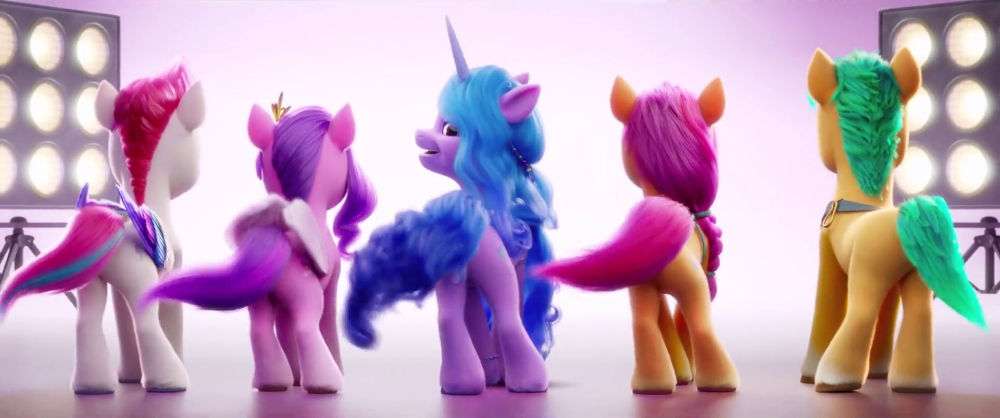

Practica 2: Borja Lopez Pineda

Categorias
-
Electrónica: Aparatos con semiconductores
Ejemplos:
- Ordenadores
- Monitores
- Impresoras
- Bombillas inteligentes
- Absolutamente todo, porque ya todo incluye un chip de silicio
-
Lectura: Libros y todo lo relacionado
Ejemplos:
- Robotics Vision and Control de Peter Corke
- Marcapaginas
- Lo de las señoras que sirve para humedecerse los dedos y pasar paginas
- Revistas
-
Juegos: Objetos diseñados para proporcionar divertimento
Ejemplos:
- Videojuegos
- Juegos de mesa
- Juegos para mayores
- Libros
-
Otros: Cosas que no encajan en las categorias anteriores
Ejemplos:
- Latas de cachuela extremeña
- Alfombrilla de ratón
- Papel burbuja
- Provetas de cristal